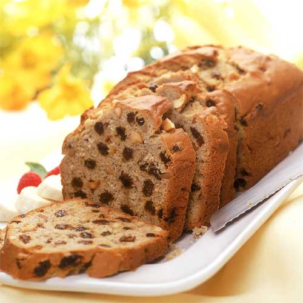

Banana Cake
Home

Description
Our original Banana Cake recipe, made from old banana's.
This is very simple and yummy and we've used it since Phoebe was a baby.
Ingredients
- 100g self-raising flour
- 1/2 tsp ground mixed spice
- 50g butter
- 75g raisins
- 2 mendium overripe bananas
- 50g walnuts (optional)
- 1 egg, beaten
Instructions
- Pre-heat oven to 180C
- Sift flour and spice together
- Add butter using rubbing method
- Add raisins/walnuts
- Mix together wet ingredients
- Add wet ingredients
- Turn head down to 160C and put in oven
- Cook for 45-60 min